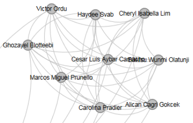
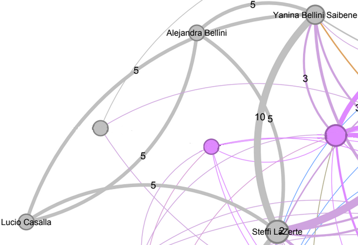

Community Manager
Facilitates the activities of a community and the interactions between community members. Community management may be considered as “in-reach” rather than “outreach” or public engagement. - CSCCE

Why analyze our community?

How we can analyze our community connectivity?

Social Networks Analysis - Basic elements

Social Networks Analysis - Basic elements

Social Networks Analysis - Basic elements

Social Networks Analysis - Basic elements

Social Networks Analysis - Basic elements

Social Networks Analysis - Basic elements

Social Networks Analysis - Basic elements

Social Networks Analysis - Basic elements

Social Networks Analysis - Basic elements

Path to contribute at rOpenSci

Write a blog post

Review a package

Maintain a package

Speak at a Comm Call

Become a champion

Host a coworking session
Let’s see an example with the Blog

Let’s see an example with the Blog

Blog-Post full network 2013-2023

We can analyze it annually


All contribution together and zoom on clusters

 Champions first co-hort

R-universe Stars Interview Team
What if you wanted to do the same for your community?

¡Gracias, Thank you, Obrigada!
- Slides:
- Code:
- The pictures are adaptation by my 7yo son and me to images by Freepik on hand drawn style stickman set
- We use R, gephy, excalidraw and quarto for build this talk.
- Thanks to the rOpenSci Staff Team, Elio and Ale for their feedback.


Social Networks Analysis
Group of individuals who relate to others for a specific purpose, characterized by the existence of information flows.